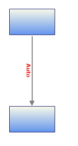
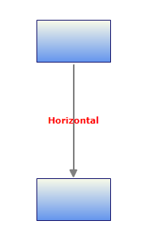
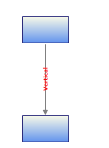

Essential Diagram for WPF provides support to orient the LineConnector label as needed.
Use Case Scenarios
When the label overlaps with the nodes or connectors, it will not be legible. In such case you can use this feature to align the label to make it legible.
Properties
Table 41: Property Table
|
Property |
Description |
Type |
Data Type |
Reference links |
|
LabelOrientation |
Gets or sets a value to orient the label
Default Value is Auto. |
Dependency property |
LabelOrientation.Auto LabelOrientation .Horizontal LabelOrientation .Vertical |
NA |
Orienting the Label
You can orient the label using the LabelOrientation property. You can set this to Horizontal, Vertical or Auto. By default this is set to Auto.
The following code illustrates how to set the LabelOrientation to Auto:
|
[C#]
LineConnector line = new LineConnector(); line.LabelOrientation = Syncfusion.Windows.Diagram.LabelOrientation.Auto; |
|
[VB]
Dim line As New LineConnector() line.LabelOrientation = Syncfusion.Windows.Diagram.LabelOrientation.Auto
|
 Note: when this property is set to Auto, the label
will be positioned along the angle of the line drawn.
Note: when this property is set to Auto, the label
will be positioned along the angle of the line drawn.

Figure 89: LabelOrientation is Auto
The following code illustrates how to set the LabelOrientation to Horizontal:
|
[C#]
LineConnector line = new LineConnector(); line.LabelOrientation = Syncfusion.Windows.Diagram.LabelOrientation.Horizontal; |
|
[VB]
LineConnector line = new LineConnector(); line.LabelOrientation = Syncfusion.Windows.Diagram.LabelOrientation.Horizontal; |

Figure 90: LabelOrientation is Horizontal
The following code illustrates how to set the
LabelOrientation to Vertical:
|
[C#] LineConnector line = new LineConnector(); line.LabelOrientation = Syncfusion.Windows.Diagram.LabelOrientation.Vertical; |
|
[VB] Dim line As New LineConnector() line.LabelOrientation = Syncfusion.Windows.Diagram.LabelOrientation.Vertical
|

Figure 91: LabelOrientation is Vertical